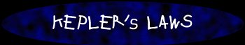
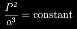

|
 |
|
| ||||
|  |
In 1610, after studying the motions of the planets in the sky, the astronomer Johannes Kepler stated three "laws" for planetary motion:
Kepler's laws were empirical laws; that is, they were based on observations and not on any underlying theory of how the solar system worked. It wasn't until Isaac Newton came along and derived the force of gravity that Kepler's Laws gained a physical meaning.
- Each planet moves on an ellipse with the Sun at one focus.
- The imaginary line connecting a planet and the Sun sweeps out equal areas in equal times.
- For all planets, the square of the orbital period divided by the cube of its distance to the
sun is a constant. That is,
 When Newton applied the law of gravity to Kepler's 3rd Law, he realized it's real importance: Kepler's Third Law gives a means for calculating the mass of a planet. The mysterious constant in Kepler's Third Law is determined by the mass of the object being orbited:
where G is a physical constant known as the gravitational constant and M is the mass of the object being orbited.
With this expression in hand, we can now use observations of Jupiter's moons to measure the mass of Jupiter. If we measure the period of each satellite's trip around the planet, as well as its distance from Jupiter, we can use Kepler's Third Law to calculate Jupiter's mass:
So let's go observe Jupiter!
: actually, the semi-major axis of the ellipse. [back]
|
|
|